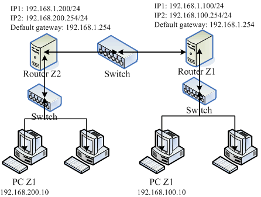

8.3 动态路由器架设：quagga (zebra + ripd)
在一般的静态路由器上面，我们可以透过修改路由配置文件 (route-ethN) 来设定好既定的路由规则，让你的路由器运作顺利。不过， 这样的方法总是觉得很讨厌！如果某天因为组织的再造导致需要重新规划子网网段，如此一来，你就得要在图 8.2-1 的 Router A 与 Linux Router 再次的处理与检查路由规则，真是有够麻烦的～ 那能不能让路由器自己学习新的路由，来达成自动增加该笔路由的信息呢？
上述的功能就是所谓的动态路由。动态路由通常是用在路由器与路由器之间的沟通，所以要让你的路由器具有动态路由的功能， 你必须要了解到对方路由器上面所提供的动态路由协议才行，这样两部路由器才能够透过该协议来沟通彼此的路由规则。 目前常见的动态路由协议有：RIPv1, RIPv2, OSPF, BGP 等。
想要在 CentOS 上面搞定这些动态路由的相关机制，那就得要使用 quagga 这个软件啦！这个软件是 zebra 计划的延伸， 相关的官网说明可以参考文后的参考数据(注3)。既然要玩 quagga ，自然就得要先安装他啰！赶紧处理吧！
[root@www ~]# yum install quagga
[root@www ~]# ls -l /etc/quagga
-rw-r--r--. 1 root root 406 Jun 25 20:19 ripd.conf.sample
-rw-r-----. 1 quagga quagga 26 Jul 22 11:11 zebra.conf
-rw-r--r--. 1 root root 369 Jun 25 20:19 zebra.conf.sample
.....(其他省略).....
这个软件所提供的各项动态路由协议都放置到 /etc/quagga/ 目录内，底下我们以较为简单的 RIPv2 协议来处理动态路由， 不过你得要注意的是，不论你要启动什么动态路由协议，那个 zebra 都必须要先启动才行！这是因为：
- zebra 这个 daemon 的功能在更新核心的路由规则；
- RIP 这个 daemon 则是在向附近的其他 Router 沟通协调路由规则的传送与否。
而各个路由服务的配置文件都必须要以 /etc/quagga/*.conf 的档名来储存才行，如上表我们可以发现 zebra 这个服务是有设定好了，不过 ripd 的档名却不是 .conf 结尾。所以我们必须要额外作些设定才行。
为了练习一下我们的 quagga ，当然得要设计一下可能的网络联机啰～假设网络联机的图标如下，共有三个区网的网段， 其中最大的是 192.168.1.0/24 这个外部区网，另有两个内部区网分别是 192.168.100.0/24 及 192.168.200.0/24 。
 图 8.3-1、练习动态路由所设定的网络联机示意图
上图的两部 Linux Router 分别负责不同的网域，其中 Router Z1 是上个小节设定好之后就保留的，左边的 Router Z2 则是需要额外设定的路由器喔！两部 Router 可以透过 192.168.1.0/24 这个网域来沟通。在没有设定额外路由规则的情况下，那个 PC Z1 与 PC Z2 是无法沟通的！另外，quagga 必须要同时安装在两部 Linux Router 上头才行， 而且我们只要设定好这两部主机的网络接口 (eth0, eth1) 后，不需要手动输入额外的路由设定喔！可以透过 RIP 这个路由协议来搞定的！
1. 将所有主机的 IP 设定妥当：
这是最重要的吧？请将这四部主机 (Router Z1, Router Z2, PC Z1, PC Z2) 的网络参数，按照图 8.3-1 的模样设置妥当。 设置的方式请参考本章上一小节，或者是依据第四章的 4.2.1 来设定啰，这里不再重复说明了。 另外，在 Router Z1, Z2 的部分还得要加上修改 ipforwrad 参数！亦即是 /etc/sysctl.conf 的设定值喔！ 这个鸟哥也常常忘记 @@。
2. 在两部 Router 上面设定 zebra ：
我们先设定图 8.3-1 右手边那一部 Router Z1，关于 zebra.conf 你可以这样设定的：
# 1\. 先设定会影响动态路由服务的 zebra 并且启动 zebra [root@www ~]# vim /etc/quagga/zebra.conf hostname www.centos.vbird <==给予这个路由器一个主机名，随便取！ password linuxz1 <==给予一个密码！ enable password linuxz1 <==将这个密码生效！ log file /var/log/quagga/zebra.log <==将所有 zebra 产生的信息存到登录文件中 [root@www ~]# /etc/init.d/zebra start [root@www ~]# chkconfig zebra on [root@www ~]# netstat -tunlp | grep zebra Active Internet connections (only servers) Proto Recv-Q Send-Q Local Address Foreign Address State PID/Program name tcp 0 0 127.0.0.1:2601 0.0.0.0:* LISTEN 4409/zebra仔细看，由于 zebra 这个服务的任务主要是在修改 Linux 系统核心内的路由， 所以他仅监听本机接口而已，并不会监听外部的接口才对！另外，在 zebra.conf 这个档案当中， 我们所设定的那个密码是有作用的喔！可以让我们登入 zebra 这套软件呢！ 好了，我们来查一查这个 2601 的 port 是否正确的启动的呢？
[root@www ~]# telnet localhost 2601 Trying 127.0.0.1... Connected to localhost.localdomain (127.0.0.1). Escape character is '^]'. Hello, this is Quagga (version 0.99.15). Copyright 1996-2005 Kunihiro Ishiguro, et al. User Access Verification Password: <==在这里输入刚刚你设定的密码啊！ www.centos.vbird> ? <==在这边输入『 ? 』就能够知道有多少指令可使用 echo Echo a message back to the vty enable Turn on privileged mode command exit Exit current mode and down to previous mode help Description of the interactive help system list Print command list quit Exit current mode and down to previous mode show Show running system information terminal Set terminal line parameters who Display who is on vty www.centos.vbird> list <==列出所有可用指令 echo .MESSAGE ....(中间省略).... show debugging zebra show history show interface [IFNAME] ....(中间省略).... show ip protocol show ip route ....(其他省略).... www.centos.vbird> show ip route Codes: K - kernel route, C - connected, S - static, R - RIP, O - OSPF, I - ISIS, B - BGP, > - selected route, * - FIB route K>* 0.0.0.0/0 via 192.168.1.254, eth0 <==核心直接设定的 C>* 127.0.0.0/8 is directly connected, lo <==接口产生的路由 K>* 169.254.0.0/16 is directly connected, eth1 <==核心直接设定的 C>* 192.168.1.0/24 is directly connected, eth0 <==接口产生的路由 C>* 192.168.100.0/24 is directly connected, eth1 <==接口产生的路由 www.centos.vbird> exit Connection closed by foreign host.仔细看到，我们登入这个 zebra 的服务之后，可以输入『help』或问号『?』， zebra 就会显示出你能够执行的指令有哪些，比较常用的当然是查询路由规则啰！以『 show ip route 』来查阅，结果可以发现目前的接口与默认路由都被显示出来了，显示的结果当中：
- K ：代表以类似 route 指令加入核心的路由规则，包括 route-ethN 所产生的规则；
- C ：代表由你的网络接口所设定的 IP 而产生的相关的路由规则
- S ：以 zebra 功能所设定的静态路由信息；
- R ：就是透过 RIP 协议所增加的路由规则啰！ 事实上，如果你还想要增加额外的静态路由的话，也可以透过 zebra 而不必使用 route 指令呢！ 例如想要增加 10.0.0.0/24 给 eth0 来处理的话，可以这样做：
[root@www ~]# vim /etc/quagga/zebra.conf # 新增底下这一行喔！ ip route 10.0.0.0/24 eth0 [root@www ~]# /etc/init.d/zebra restart [root@www ~]# telnet localhost 2601 Password: <==这里输入密码 www.centos.vbird> show ip route K>* 0.0.0.0/0 via 192.168.1.254, eth0 <u>S>* 10.0.0.0/24 [1/0] is directly connected, eth0</u> C>* 127.0.0.0/8 is directly connected, lo K>* 169.254.0.0/16 is directly connected, eth1 C>* 192.168.1.0/24 is directly connected, eth0 C>* 192.168.100.0/24 is directly connected, eth1嘿嘿！立刻就会多出一笔路由的规则，而且最右边会显示 S，亦即是静态路由 (Static route) 的意思。 如此一来，我们系统管理员可就轻松多了！设定完右边 Router Z1 的 zebra 之后，不要忘记设定你的 Router Z2 呦！ 同样的设定再来一遍啦！只是主机名与密码应该给予不同才是呦！因为过程都一样，鸟哥就不再重复设定。 接下来我们可以开始看看 ripd 这个服务啰！
3. 在两部 Router 上面设定 ripd 服务：
ripd 这个服务可以在两部 Router 之间进行路由规则的交换与沟通，当然啦，如果你的环境里面有类似 Cisco 或者是其他有提供 RIP 协议的路由器的话，那么你当然也是可以透过这个 RIP 让你的 Linux Router 与其他硬件路由器互相沟通的吶！ 只不过 CentOS 6.x 的 quagga 所提供的 ripd 服务使用的是 RIPv2 版本，这个版本预设就要求得要进行身份验证的动作， 但是我们是个小型网络，并不想要加入这个身份验证的功能，因此就得要增加某些设定值才能够顺利的启动 ripd 呦！
先来设定 Router Z1 吧！在 Router Z1 当中，我们主要是透过 eth0 发送所有的网域路由信息，同时，我们管理的网域有 192.168.1.0/24, 192.168.100.0/24。再加上取消身份验证的设定值后，我们的 ripd 就会变成这样：
[root@www ~]# vim /etc/quagga/ripd.conf hostname www.centos.vbird <==这里是设定 Router 的主机名而已 password linuxz1 <==设定好你自己的密码喔！ debug rip events <==可以记录较多的错误讯息！ debug rip packet <==鸟哥透过这个讯息解决很多问题 router rip <==启动 Router 的 rip 功能 version 2 <==启动的是 RIPv2 的服务 (默认值) network 192.168.1.0/24 <==这两个就是我们管理的接口啰！ network 192.168.100.0/24 <u>interface eth0</u> <==针对外部的那个接口，要略过身份验证的方式 <u>no ip rip authentication mode</u> <==就是这个项目！不要验证身份！ log file /var/log/quagga/zebra.log <==登录档设定与 zebra 相同即可 [root@www ~]# /etc/init.d/ripd start [root@www ~]# chkconfig ripd on [root@www ~]# netstat -tulnp | grep ripd Active Internet connections (only servers) Proto Recv-Q Send-Q Local Address Foreign Address State PID/Program name tcp 0 0 127.0.0.1:2602 0.0.0.0:* LISTEN 4456/ripd udp 0 0 0.0.0.0:520 0.0.0.0:* 4456/ripd # 新版的 quagga 启动的 2602 仅在 127.0.0.1，是透过 port 520 来传递信息！基本上，这样就设定完成一部路由器的 RIP 动态路由协议了！在上头 ripd.conf 的设定当中， 他会主动以 eth0 及 192.168.1.0/24 这个网域的功能来进行搜索，如此一来，未来你进行任何路由规则的变动， 或者是整个网域的主机 IP 进行更动，你将不需要重新到每部 Router 上更动！ 因为这些路由器会自动的更新他们自己的规则喔！嘿嘿！接下来，同样的动作请你到 图 8.3-1 左边那部 Router Z2 上面设定一下！ 因为整个设定的流程都一样，所以这里鸟哥就省略啦！
4. 检查 RIP 协议的沟通结果：
在两部 Linux Router 都设定妥当之后，你可以登入 zebra 去看这两部主机的路由更新结果喔！ 举例来说，鸟哥登入图 8.3-1 右边那部 Router Z1 后，并且登入 zebra ， 观察路由会是这样的情况：
[root@www ~]# route -n Kernel IP routing table Destination Gateway Genmask Flags Metric Ref Use Iface 192.168.100.0 0.0.0.0 255.255.255.0 U 0 0 0 eth1 10.0.0.0 0.0.0.0 255.255.255.0 U 0 0 0 eth0 192.168.1.0 0.0.0.0 255.255.255.0 U 0 0 0 eth0 192.168.200.0 192.168.1.200 255.255.255.0 UG 2 0 0 eth0 0.0.0.0 192.168.1.254 0.0.0.0 UG 0 0 0 eth0 # 其实看路由就知道啦！那条有点线的就是新增的路由规则！很清楚！ [root@www ~]# telnet localhost 2601 Password: <==不要忘记了密码啊！ www.centos.vbird> show ip route Codes: K - kernel route, C - connected, S - static, R - RIP, O - OSPF, I - ISIS, B - BGP, > - selected route, * - FIB route K>* 0.0.0.0/0 via 192.168.1.254, eth0 S>* 10.0.0.0/24 [1/0] is directly connected, eth0 C>* 127.0.0.0/8 is directly connected, lo K>* 169.254.0.0/16 is directly connected, eth1 C>* 192.168.1.0/24 is directly connected, eth0 C>* 192.168.100.0/24 is directly connected, eth1 R>* 192.168.200.0/24 [120/2] via 192.168.1.200, eth0, 00:02:43如果你有看到上述的字体，嘿嘿！那就是成功啦！那个最左边的 R 代表的是透过 RIP 通讯协议所设定的路由规则啦！ 如此一来，咱们的路由器设定就搞定啰～如果一切都没有问题，你也想要开机就启动 zebra, ripd，那么还得要这样：
[root@www ~]# chkconfig zebra on [root@www ~]# chkconfig ripd on
透过这个 quagga 以及 RIPv2 的路由协议的辅助，我们可以轻松的就将路由规则分享到附近区网的其他路由器上头， 比起单纯使用 route 去修改 Linux 的核心路由表，这个动作当然要快速很多！不过，如果是很小型的网络环境，那么不要使用这个 quagga 啊！因为有点多此一举的感觉。如果你的企业环境真的有够大，那么玩一玩这个 quagga 配合一些动态路由协议，嘿嘿！也是可行的啦！
Tips: 鸟哥差一点被这一版的 ripd.conf 设定内容搞死～因为 CentOS 5.x 以后的版本预设的 RIPv2 会去进行身份验证，所以原先在 CentOS 4.x 的设定是不能用的，偏偏登录档又看不出个所以然..后来查到可以透过 ripd.conf 内的 debug 参数去设定除错登录， 才发现 RIPv2 的认证问题！最终 google 一下才解决问题～好累啊！